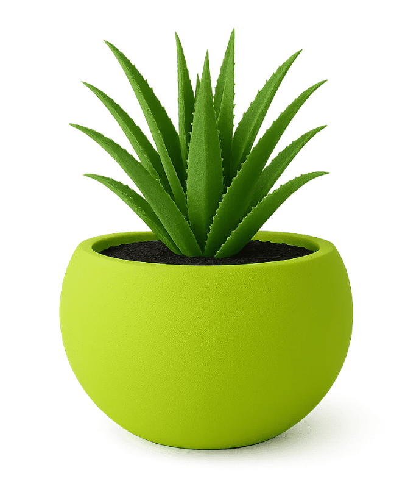

Purposeful forms
Designs that complement both architecture and the organic beauty of plants.


THE FARMETOS WAY
Farmetos began with a simple belief: the pot that holds a plant should be as considered as the plant itself. We pair the warmth of handmade design with the resilience of premium FRP.
Every finish, proportion and silhouette is selected to give greenery a more beautiful place to grow — inside, outside and everywhere in between.
View collection →Designs that complement both architecture and the organic beauty of plants.
Lightweight, weather-resistant FRP made for seasons of everyday use.
Careful hand-finishing brings warmth and individuality to each piece.